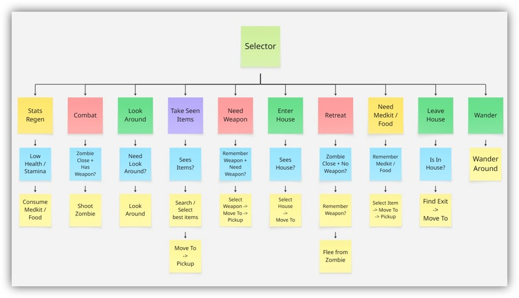

Zombie Survivor
Project Information
- Category: Solo Projects
- Course: Game AI
- Project date: Jun 2026
Project Overview
For my final exam of the course "Game AI" I was tasked with making an AI character controlled by a plugin that could survive in a premade "Zombie Game".
The survivor can enter houses, pickup items, kill zombies etc. The Survivor should make choices based on its state and the state of the game. For example, if the survivor is low on health they should prioritize finding medkits.
The survivor should avoid purge zones and should avoid being attacked by zombies.
Features (I worked on):
Decision making
For decision making I used a Unreal Engine Behaviour tree paired with a blackboard since its easy to edit and very readable. This graph resembles the decision making tree:

Enemy Handling
Danger: The survivor identifies enemies as threats only when they are within a certain range.
Combat: When armed, the survivor targets the enemy, rotates toward it, and attacks until the threat is eliminated.
Retreat: When unarmed, the survivor flees from the enemy and searches its memory for the nearest available weapon.
Inventory
Scavenging: The survivor evaluates visible items based on priority rules and decides whether to collect them.
Item Usage: Items are used when required and discarded once their value reaches zero.
Prioritization: Items are prioritized based on the inventory and whether the survivor already has an item or needs a certain item.
Memory: Uncollected items are saved in memory and can be found later when needed.
Inventory Cleanup: Garbage is automatically thrown away, and duplicate items may be dropped to free space for higher-priority items.
Steering
Wander: The survivor moves around randomly.
Seek & Path: The survivor calculates a path to a target and follows it using seek behaviour.
Flee: The survivor flees from nearby zombies.
BlendedSteering: All steering behaviours are combined with Purge Avoidance and Obstacle Avoidance using raycasts.